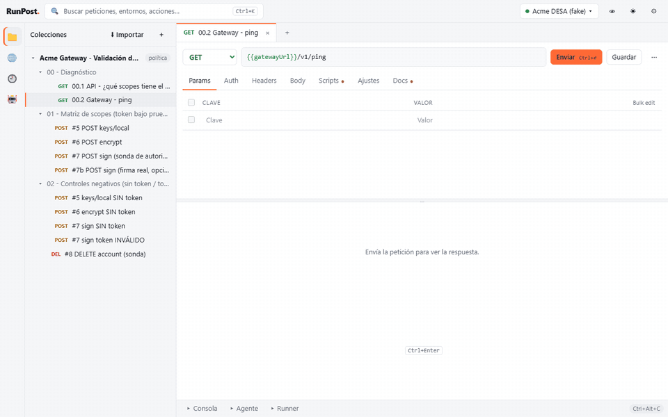

The HTTP client you and your AI agent share
One binary. No account. No telemetry. A Postman-like desktop app with a built-in MCP server: your agent runs your saved requests with compact, masked answers, and you watch every call live — and approve the risky ones.

Why RunPost
MCP built in
13 compact tools. The agent refers to saved requests by name instead of rewriting URLs, headers and tokens; select, ranges and diffs keep answers small.
Live Agent panel
Every call of the model as a row — tool, request, status, ms, raw → sent bytes — with a token meter.
Guardrails
Per collection: allowed methods, approval in the app (Approve / Deny, 60 s) and calls per minute.
Secrets out of files
Masked for the agent, history and logs, and optionally kept in the OS keyring instead of the workspace.
Postman habits
Collections, environments, scripts (pm.*), Collection Runner, v2.1 import/export and the same shortcuts.
Local and Git-friendly
One binary, no account, no telemetry. One plain JSON file per collection and environment.
Install
Builds are not code-signed yet, so the first launch asks for confirmation. Each block ends by
putting runpost_mcp (CLI and MCP server) on your PATH.
Windows
Invoke-WebRequest https://github.com/paul0610/runpost/releases/download/v0.2.0/RunPost_0.2.0_x64-setup.exe -OutFile RunPost-setup.exe
.\RunPost-setup.exe
[Environment]::SetEnvironmentVariable('Path', [Environment]::GetEnvironmentVariable('Path','User') + ";$env:LOCALAPPDATA\RunPost", 'User')macOS (Apple silicon)
curl -LO https://github.com/paul0610/runpost/releases/download/v0.2.0/RunPost_0.2.0_aarch64.dmg
hdiutil attach RunPost_0.2.0_aarch64.dmg && cp -R /Volumes/RunPost/RunPost.app /Applications/ && hdiutil detach /Volumes/RunPost
xattr -dr com.apple.quarantine /Applications/RunPost.app && sudo ln -sf /Applications/RunPost.app/Contents/MacOS/runpost_mcp /usr/local/bin/runpost_mcpLinux (Debian / Ubuntu; also an AppImage)
curl -LO https://github.com/paul0610/runpost/releases/download/v0.2.0/RunPost_0.2.0_amd64.deb
sudo apt install ./RunPost_0.2.0_amd64.deb
runpost_appConnect your agent
Claude Code (2.1.275 or later), one line in your terminal:
claude plugin install runpost --marketplace paul0610/runpostOr inside Claude Code: /plugin marketplace add paul0610/runpost, then
/plugin install runpost@runpost.
The plugin brings the MCP server, the api-testing skill and the commands
/runpost:run, /runpost:suite and /runpost:import. With the
app open on the same workspace, its calls show up in the Agent panel and protected requests wait for
your approval.
Codex, Claude Desktop and others: in the app, Agent → Connect agent ▾ copies a
ready-made config with your paths. Examples and an AGENTS.md for Codex are in
docs/mcp-client-configs.
MCP tools
Same tools over stdio and over Streamable HTTP (http://127.0.0.1:7879/mcp while the
app is open). Full contract: docs/MCP.md.
| Tool | What it does |
|---|---|
ws_overview | Collections, environments and the active one. Call it first. |
list_requests · search | Find saved requests by collection, folder or text. |
get_request | A saved request, only the fields you ask for. |
run_request | Run a saved request: status, ms, minified and truncated body, select (JSONPath). |
send | An ad hoc request with {{variables}}; optionally save it. |
get_response | Read a previous response by ranges, or diff_against another one or a saved reference. |
run_collection | Run a collection or folder with its scripts: summary or only failures. |
env_get · env_set | Variables (secrets as ***; secrets go to the OS keyring). |
upsert_request · import_postman | Build collections in one call or import Postman v2.1. |
history | Recent executions with masked URLs. |